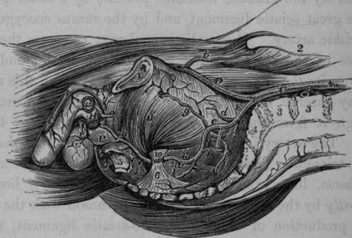
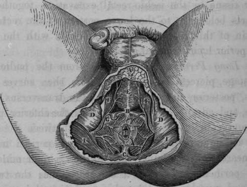

The Internal Pudic Artery
Description
This section is from the book "Anatomy Of The Arteries Of The Human Body", by John Hatch Power. Also available from Amazon: Anatomy of the Arteries of the Human Body, with the Descriptive Anatomy of the Heart.
The Internal Pudic Artery
The description of this vessel has been purposely deferred till the present stage of the dissection of the pelvis. This artery is larger than the obturator, but smaller than the sciatic, with which it usually arises in common. It may be divided into four stages: in the first it lies within the cavity of the pelvis; in the second it is situated outside this cavity; in the third it is again within its osseous walls; and in the fourth stage it is lodged between the two layers of the triangular ligament of the urethra. In the first stage it descends in front of the sacral plexus of nerves and pyriformis muscle, between the rectum and outer wall of the pelvis. Usually it lies at first somewhat external to the sciatic artery, but at the lower portion of the first stage it lies anterior and internal to it, ani escapes from this cavity through the inferior part of the great sciatic notch, accompanied by its own nerve, the sciatic artery, and the sciatic nerve. At its exit from the pelvis it passes between the lower edge of the pyriformis muscle and the lesser sacro-sciatic ligament. After the pudic artery has escaped from the pelvis, it enters its second stage, and in this situation lies behind the spine of the ischium, near the attachment of the lesser sacro-sciatic ligament to its point. Here, as we dissect the artery from behind, we will find it covered by the glutaeus maximus muscle, by a small portion of the great sciatic ligament, and by the ramus coccygeus of the sciatic artery. The pudic artery next re-enters the bony parietes of the pelvis by the lesser sciatic notch, and thus gets into its third stage. As it is passing through this notch, we may observe the obturator internus muscle also escaping through it from the pelvis, the muscle lying closer to the bone. The artery in its third stage ascends towards the base of the triangular ligament, lying between the obturator muscle and fascia, in a kind of prismatic canal, which is bounded internally by the obturator fascia and its union with the semilunar production of the great sacro-sciatic ligament, which latter extends as far forwards as the crus penis; externally by the ischium and obturator internus, and inferiorly, where we observe the narrow portion of the canal, it is bounded by the attachment of the great sciatic ligament to the ischium. Professor Alcock maintains, that corresponding to this situation the artery does not lie between the fascia and the muscle, but that it is contained "in a canal in the obturator fascia."*
Fig. 52. Represents the course of the Internal Pudic Artery to its termination. The Viscera and Fascist have been removed.
A, Aorta. B, Left Common Iliac Artery divided. C, Right Common Iliac. D, External Iliac. E, Internal Iliac, a, Situation of the origin of the Epigastric Artery, b, Circumflexa Ilii Artery, d, Umbilical Artery divided, e, Anterior part of the Internal Iliac, f, Posterior part, g. Obturator Artery, h, A small artery sending twigs into the first Sacral Foramen. I, Lateral Sacral Artery, k, Glutaeal Artery passing out of the Pelvis above and in front of the first Sacral Nerve. 1, The Sciatic Artery, m, m, Internal Pudic Artery, n. A Haemorrhoidal brauch from the Internal Pudic in its first stage, o, External Haemorrhoidal Arteries. P. Long, or Superficial Perineal Artery, giving off in this instances, the transverse Perineal branch, r. Scrotal branches of the Superficial Perineal Artery, t, t. t, Dorsal Artery of the Penis. 1, Symphysis Pubis. 2, Crest of Ilium. 3. 9, Bodies of the fourth and fifth Lumbar Vertebrae. 4, 4, Sacrum. 5. Coccyx. 6, Lesser Sciatic Ligament, with Coccygeus Muscle. 7, Great Sciatic Ligament. 8. A portion of the lower end of the Rectum. 9, Right half of the External or superficial Sphincter. 10. Spine of the Ischium. 11. Obturator Internus Muscle. 12. Septum Scroti. 13. Membranous part of the Urethra dissected and cut. 14. Bulbous portion of Corpus Spongiosum. 15, Section of left Corpus Cavernosum. 16, Suspensory Ligament of the Penis.
The pudic artery, finally, pierces the back part of the triangular ligament, near the external attachment of its base, and enters its fourth stage. In this stage the artery of each side is situated between the two layers of the ligament corresponding to the attachment of its sides to the rami of the ischia and pubes; and close to the sub-pubic ligament it pierces the anterior layer of the triangular ligament at its apex, and terminates in the dorsal artery of the penis. Throughout these several stages the pudic nerve accompanies the artery.
* Todd's Cyclopaedia, p. 835.
Fig. 53. Represents the Surgical Anatomy of the Ano-perineal Region in the Male, when the integuments and superficial fascia have been removed.
A, Portion of the Superficial Fascia. P. The central point of the Perineum. C, The Coccyx. P, D, The Ischiatic Tuberosities. K, The Accelerators Urine Muscles meeting in the central Raphe. F, F, The Erectores Penis Muscles of each side. G, The Transverse Muscle of the Perineum of the right side. H, The Anus. I, I, The Great Glutaeal Muscles.
Within the pelvis the pudic artery gives off branches to the rectum, bladder, and vesiculae seminales in the male, and to the upper part of the vagina in the female :—to the muscles and sacral plexus of nerves.
As the artery turns round the spine of the ischium, it supplies the glutaeus maximus and rotator muscles in this situation. Its principal branches arc given off in its third and fourth stages. They are the following :—
External or Inferior Haemorrhoidal.
Long or Superficial Perineal.
Transverse Perineal.
Artery of the Bulb. Artery of Corpus Cavernosum.
Dorsal Artery of the Penis.
The External Haemorrhoidal
These arteries, generally two in number, come off from the pudic artery in its third stage, and pierce the obturator fascia to reach the inferior part of the rectum. They supply the mass of adipose and areolar tissue in the ischio-rectal excavation, together with the parts belonging to the lower portion of the rectum and the skin of this region, and communicate with the middle and superior haemorrhoidal arteries.
Continue to: